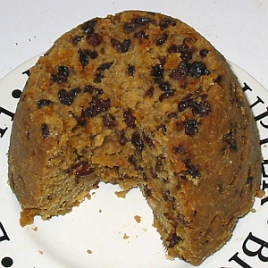
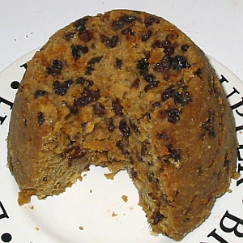

Lé podîn d'Noué tchi 'tait traditionnel en Jèrri 'tait un podîn d'flieu et 'tait bouoilli. Ach'teu ch'est l'podîn Angliais tch'est pus commun.
L's îngrédgiens:
L'èrchette:
I' faut mêler tout ensembl'ye dans eune bolle et pis i' faut mett' lé mêlange dans eune podinniéthe bein graîssie. I' faut tchuithe lé podîn à l'ieau un coupl'ye d'heuthes.
Y'en avait tchi n'y m'ttaient pon d'pain, et d'autres y m'ttaient du lait.
Nou peut étout ajouôté dé l'ieau d'vie - du couongnac, par exempl'ye.
Viyiz étout: